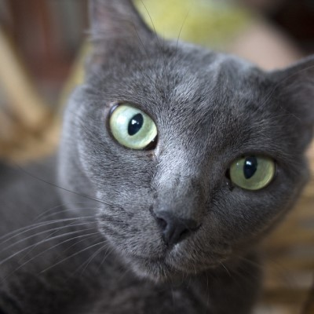

"The Mysterious Psychology of Cats: Understanding Your Furry Friend"
This article could focus on various aspects of cat psychology,
covering topics related to their instincts, behaviors, and communication.
It can delve into scientific research on cat cognition and how
owners can better understand their feline companions
for a healthy and happy coexistence.

"Best Toys for Cats: How to Keep Your Feline Friend Happy"
This article can include a review of various
types of toys available in the market, as well as
simple instructions for creating DIY toys.
Discuss why play is essential for a cat's health,
how it can aid in weight management, and contribute to
fostering a stronger bond between the cat and the owner.

"Cats Around the World: Differences in Breeds and Habits"
Present the differences in cat breeds from various regions of the world.
Compare their appearance, temperament, and specific characteristics.
Discuss how history and environment influence the evolution of
different breeds and how owners should tailor their care to the
specific needs of each breed.